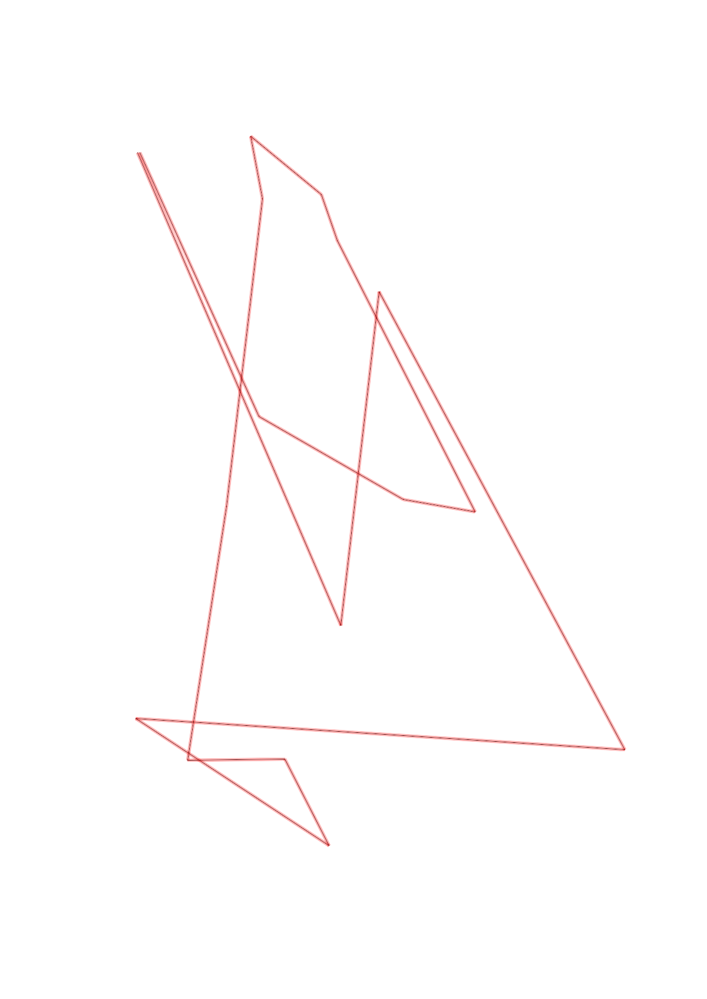
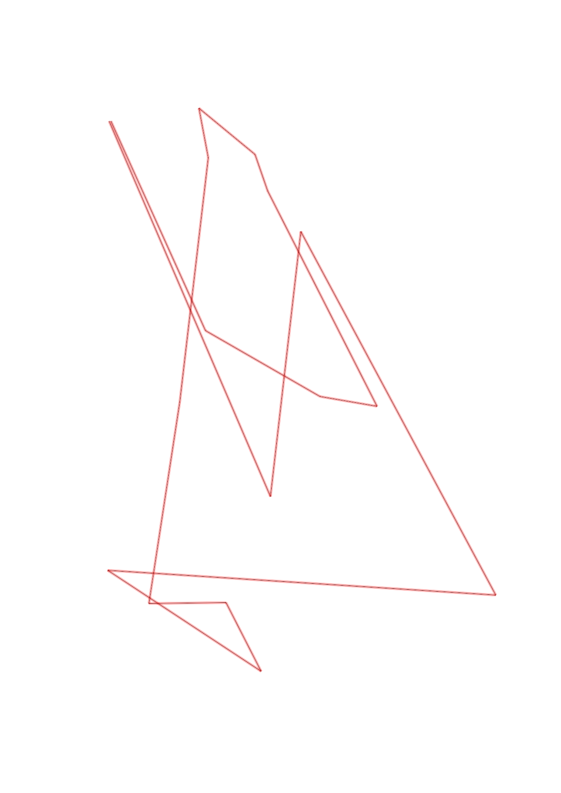

| Control |
Points |
Time Punched |
Distance |
Your Time |
Pace |
Place |
Fastest Time |
Median Time |
% Behind Fastest |
| 61 |
60 |
|
2.18 |
4:26:21 |
2:02:10 |
1 / 1 |
4:26:21 |
4:26:21 |
0% |
| 63 |
60 |
|
1.43 |
0:04:54 |
03:25 |
1 / 1 |
0:04:54 |
0:04:54 |
0% |
| 65 |
65 |
|
2.21 |
0:05:48 |
02:37 |
1 / 1 |
0:05:48 |
0:05:48 |
0% |
| 67 |
60 |
|
2.08 |
0:00:52 |
00:25 |
1 / 1 |
0:00:52 |
0:00:52 |
0% |
| 72 |
70 |
|
0.98 |
0:09:22 |
09:33 |
1 / 1 |
0:09:22 |
0:09:22 |
0% |
| 73 |
70 |
|
0.41 |
0:02:45 |
06:42 |
1 / 1 |
0:02:45 |
0:02:45 |
0% |
| 74 |
70 |
|
0.41 |
0:01:39 |
04:01 |
1 / 1 |
0:01:39 |
0:01:39 |
0% |
| 31 |
30 |
|
1.09 |
0:01:15 |
01:08 |
1 / 1 |
0:01:15 |
0:01:15 |
0% |
| 32 |
30 |
|
1.32 |
6:41:47 |
5:04:22 |
1 / 1 |
6:41:47 |
6:41:47 |
0% |
| 33 |
30 |
|
0.27 |
-1 day, 12:28:49 |
46:13:23 |
1 / 3 |
-1 day, 12:28:49 |
0:02:59 |
0% |
| 57 |
50 |
|
0.39 |
0:07:07 |
18:14 |
5 / 5 |
0:05:22 |
0:06:02 |
32% |
| 52 |
50 |
|
0.21 |
0:04:11 |
19:55 |
1 / 7 |
0:04:11 |
0:04:44 |
0% |
| 85 |
80 |
|
1.29 |
0:25:43 |
19:56 |
1 / 1 |
0:25:43 |
0:25:43 |
0% |
| 55 |
50 |
|
0.31 |
0:03:34 |
11:30 |
2 / 2 |
0:03:13 |
0:03:23 |
10% |
| 75 |
70 |
|
0.71 |
0:10:51 |
15:16 |
1 / 1 |
0:10:51 |
0:10:51 |
0% |
| Finish |
0 |
|
1.23 |
0:23:12 |
18:51 |
1 / 1 |
0:23:12 |
0:23:12 |
0% |
Total Distance Covered: 16.52km
Points Scored: 845
Late Penalty: -380
Final Score: 465
Total Time: 1hours 18minutes 10seconds
Efficiency: 28.15 points/km
 
